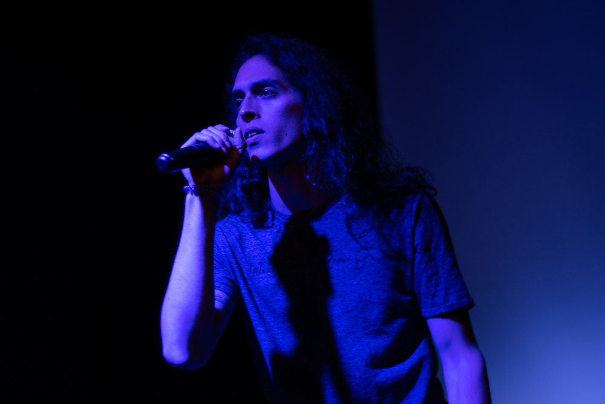

Renzo Rospigliosi
Live Coding (Música)
Artista multidisciplinario.
Complementa su trabajo en el teatro y la música con el uso de la tecnología y software libre.
Licenciado en Artes Escénicas con Mención en Teatro por la PUCP. Ha complementado su formación teatral en el Laboratorio Internacional Para Actores del grupo de teatro Malayerba en Quito, Ecuador. Ha participado como actor en montajes como “Contigo Aprendí” creación colectiva dirigida por Alejandra Guerra, y “El Pánico” de Rafael Spregelburd, dirigida por Jorge Chiarella. Con su colectivo teatral “Limbo” puso en escena “Prisión Euforia”, espectáculo de gig-theatre con temporadas en el Rock and Pez y el Centro Cultural de la PUCP. Es director del colectivo de improvisación interdisciplinario “Sensáfona”, con quienes organiza encuentros y talleres que exploran la relación entre las artes escénicas y la programación en vivo.
Next

Ximena Portal
Live Coding (Visuales)
Estudiante de Creación y Producción Escenica de la facultad de Artes Escénicas de la PUCP. Complementó sus estudios en la Escuela Nacional Superior de ballet, Vladimir Issaev school of classical ballet (Miami) y Escuela Nacional de Ballet de Cuba Alicia Alonso (Cuba). Participó como bailarina para el ballet de cámara ENSB en el TML y GTN, Un Ser en la Ciudad (PUCP), entre otros. Actualmente desempeña trabajos de docencia de danza clásica y producción en festivales y obras como seminario internacional de Artes Escénicas, Encuentro de artes Escénicas, Ciclo de Escénicas, Saliendo de la Caja, entre otros.
Next

Compositor de ópera y músico multi-instrumentista. Estudió música y composición en la academia Mario Orozco y continuó sus estudios en la PUCP con la carrera de Música con Mención en Composición Musical. Ha participado en la producción y composición de 2 EP's con Ciudad Pánico, proyecto con el cual ha girado por distintas provincias de Perú. Forma parte del colectivo teatral Limbo donde ha desempeñado la labor de composición musical para teatro. Actualmente compone música para teatro virtual y ópera colaborando con la dramaturga Maritza Núñez.
Next

Déborah Baquerizo
Danza y movimiento
Actriz e improvisadora de 23 años integrante de La Partera - Compañía de teatro formada en la Facultad de Artes Escénicas de la PUCP. Se ha desarrollado tanto en el campo de la actuación como del baile con estudios en flamenco y pole dance. Entre sus montajes se encuentra Prisión Euforia como asesora de movimiento y como actriz en La Cocina dirigido por Coco Guerra en el CCPUCP, Un barco se hunde dirigido por Mateo Chiarella en el LUM y Domina dirigido por Mario Gaviria en el CCPUCP.
Next